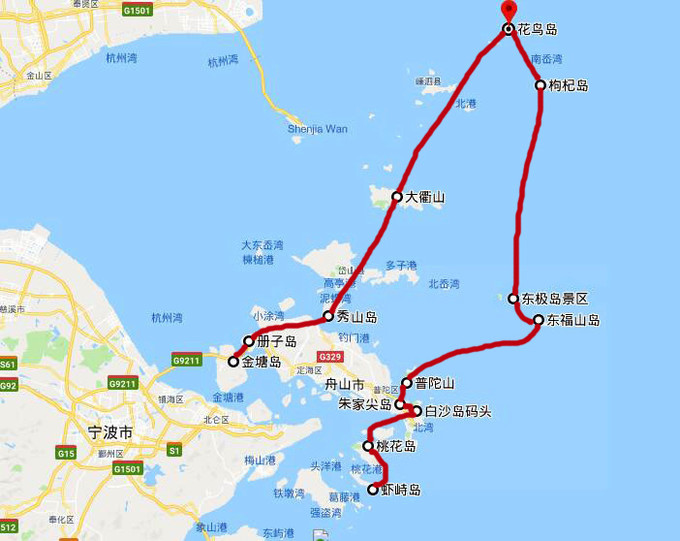
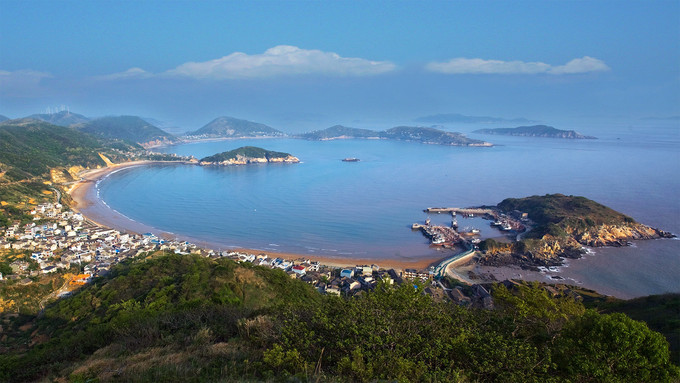
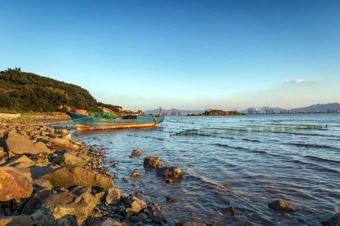

舟山群岛网红打卡景点分布图

舟山群岛位于浙江省东北部，地处长江口南测、杭州湾外缘的东海海域，是中国第一大群岛。舟山群岛诸岛分布于定海区（金塘岛、册子岛）、普陀区（白沙岛、虾峙岛、东极岛、桃花岛）、朱家尖、普陀山、岱山县（秀山岛、衢山岛）、嵊泗县 (花鸟岛、枸杞岛)等，1390个岛屿像一颗颗璀璨的珍珠，洒落在浩瀚无垠的大海中，素有千岛之乡的美称。

金塘岛

到达方式：公交：从宁波镇海客运站乘坐389路、390路、393路公交车在金塘终点站下车即到。 长途汽车：从宁波汽车南站和宁波镇海长途汽车站每天均有长途汽车直达金塘岛。 轮船：从宁波镇海码头每天有3个到金塘大浦口的船班。 自驾：从宁波出发，走甬舟高速经金塘大桥到金塘岛。